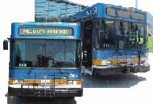

Fresno
Economic Recovery Project : Bold and Innovative Strategies to Stimulate
Economic Development, Create Jobs and Make Fresno Competitive : ( Final
Plan )
This Plan was adopted by the City Council on September 21, 1999 by a 7 - 0 vote.
Police
Officers Up, Crime Down
The
strength of the Fresno Police Department is at an all-time high, and crime
is declining rapidly.
Police
Department Crime Data
Fresno
Police Department Releases Monthy Crime Data Report
Downtown
Lake Proposal
The
proposal for a downtown lake moves foreward with a vote by the council
on June 29th to test developer interest.
Focus
on Fresno
Published
in March 1999 issue of Horizon Air Magazine.
UPS
Expands Service
UPS
announces expanded Next Day service from Fresno.
Year
End Crime Data Released
Crime
rates continue to drop, downward trends begun in 1994 continue.
Red
Light Violations
Study
by the Insurance Institute for Highway Safety of fatal traffic collisions
caused by red light running. (Fresno's Ranking) |
|
Parade
Entry Form
70th
Annual "Fresno Holiday Parade" Saturday, December 4 @ 10:00 am
Form
is in Adobe PDF Format
Fresno
Convention Center
Millennium
Logo Contest Announcement
Fresno
Area Express Kicks Off Extended Weekday Bus Service

Extended weekday bus service
to begin Wednesday September 1. The people of Fresno will have nighttime
bus service for the first time in more than 21 years.
See
Mayor's Press Release
ExploreZip
Virus Warning
This
e-mail attachment is dangerous!
Stadium
Facts
Selected
documents on proposed Baseball Stadium for Fresno.
Fresno
Becomes High-Tech
The
heart of the nations richest agricultural county is fast becoming one of
California's hottest high-tech job creators. |